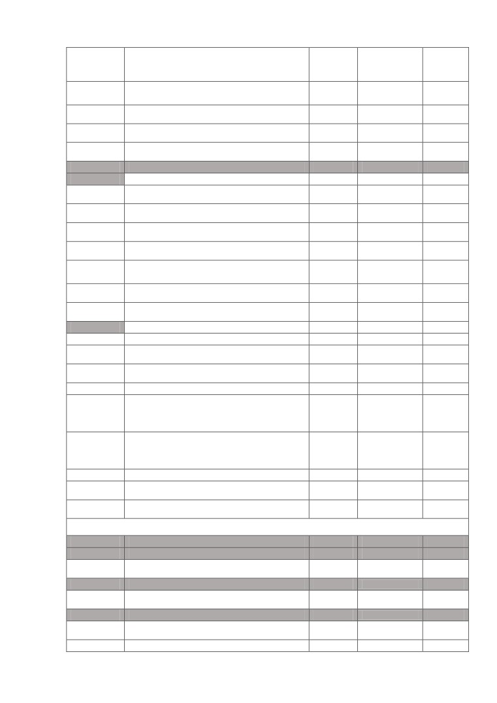
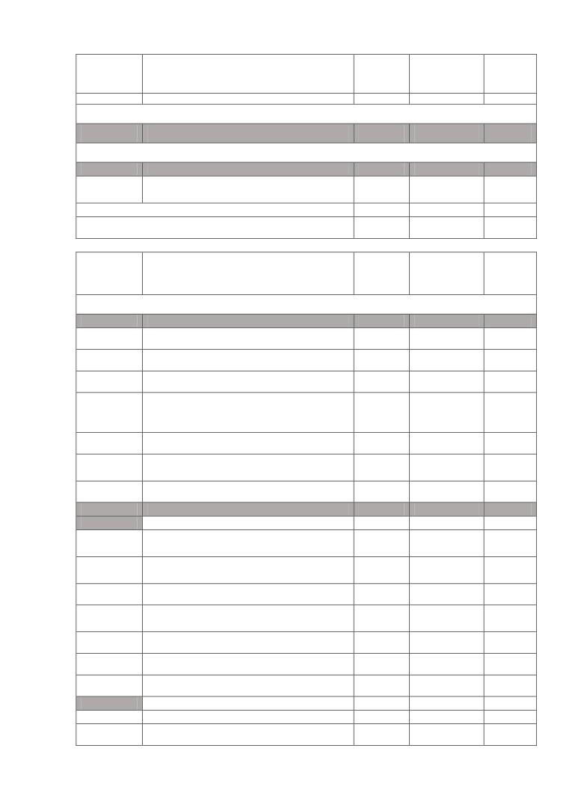
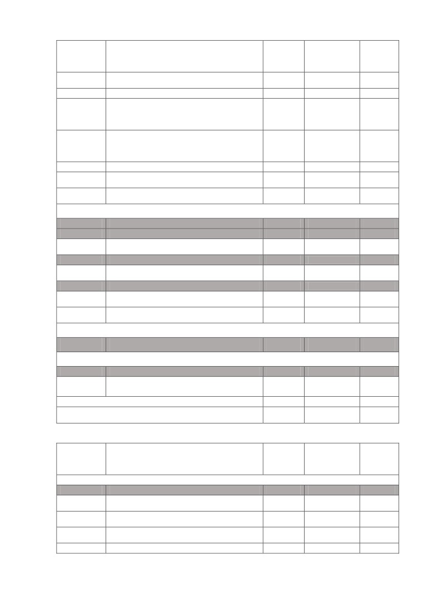
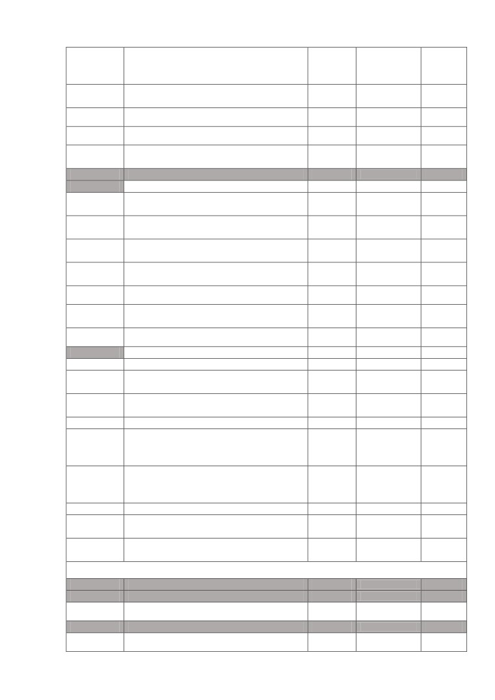
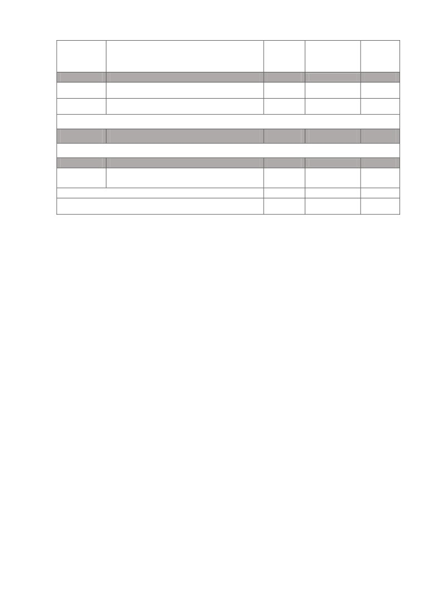
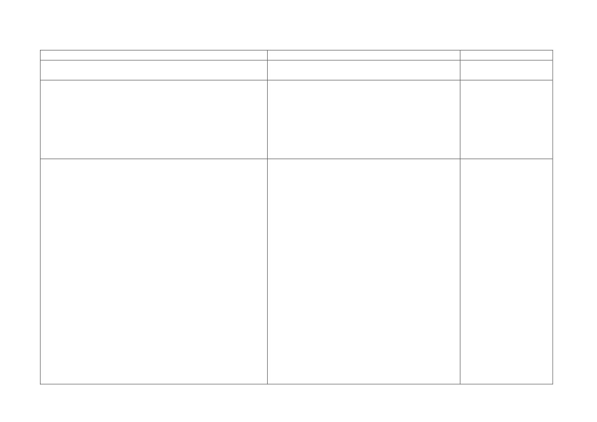

1.2 Общая характеристика ООП
Направление подготовки
09.04.02 Информационные системы и технологии
Программы магистратуры
Анализ и синтез информационных систем
Биоинформатика
Корпоративные информационные системы.
Инновационные методики и платформы
Квалификация
магистр
Форма обучения
очная
Нормативный срок освоения ООП
2 года
Трудоемкость ООП
120 зачетных единиц, 4320 часов
Форма государственной
Выпускная квалификационная работа
итоговой аттестации
Выпускающие кафедры
кафедра автоматизированных систем
кафедра биотехнологии и биоинформатики
кафедра информатики
Руководитель магистерской
Бахвалов Сергей Владимирович,
программы «Анализ и синтез
зав.кафедрой автоматизированных систем, к.т.н.
информационных систем»
_________________________С.В. Бахвалов
Верхотуров Василий Владимирович,
Руководитель магистерской
зав.кафедрой технологии продуктов питания и
программы «Биоинформатика»
химии, д.б.н.
_________________________В.В. Верхотуров
Руководитель магистерской
Воронов Владимир Кириллович,
программы «Корпоративные
д.х.н., профессор
информационные системы.
Инновационные методики и
_________________________В.К. Воронов
платформы»
Руководитель направления
Бахвалов Сергей Владимирович,
подготовки, ООП
зав.кафедрой автоматизированных систем, к.т.н.
_________________________С.В. Бахвалов
5
1.3 Миссия, цели и задачи ООП
Миссия университета
- обеспечение качественного, доступного, современного
образования, трансформированного через развитие научных и образовательных технологий
для выпускников новой формации, способных к практической реализации полученных
знаний в науке, производстве, предпринимательской деятельности.
Миссия университета утверждена на заседании ученого совета ИРНИТУ 24 ноября
2015
года
(протокол
№4) и опубликована на сайте университета
http://www.istu.edu/structure/56/1503/.
Цели ООП ВО: подготовка выпускника, способного успешно работать в
профессиональной сфере информационных технологий на основе овладения им в процессе
обучения актуальным перечнем общекультурных и профессиональных компетенций;
развитие у студентов целеустремленности, организованности, гражданственности,
коммуникативности, толерантности, повышение их общей культуры.
Общая цель включает в себя ряд конкретных целей, а именно:
Ц1. Получение магистрантами профессионального образования в области
информационных систем и технологий, позволяющего выпускнику успешно работать в
избранной сфере деятельности, обладать общекультурными, профессиональными и
специальными компетенциями, способствующими социальной мобильности выпускника и
устойчивости на рынке труда, а также способность выпускников к самообучению и
непрерывному профессиональному самосовершенствованию.
Ц2. Формирование знаний и умений получения, хранения, переработки и анализа
профессиональной информации и представления ее аналитических обзоров с обоснованными
выводами и рекомендациями, подготавливать и составлять обзоры, отчеты и научные
публикации.
Ц3. Овладение знаниями и умениями разработки и исследования теоретических и
экспериментальных моделей объектов профессиональной деятельности по различным
областям знаний с учетом различных методик, построения анализа полученных результатов
и выбора оптимального решения.
Ц4. Готовность выпускников проводить междисциплинарные научные исследования
для разработки моделей процессов и объектов на базе стандартных пакетов
автоматизированного проектирования, проведения экспериментов и анализа результатов.
Ц5. Приобретение навыков проведения исследования и разработки методик анализа,
синтеза, оптимизации и прогнозирования качества процессов функционирования
информационных систем и технологий, прогнозирования их развитие.
Дополнительно для магистерской программы
«Корпоративные информационные
системы. Инновационные методики и платформы»:
Ц6 (КСм). Формирование способностей организации взаимодействия коллективов
разработчика и заказчика; принятия управленческих решения в условиях различных мнений,
нахождения компромисса.
Задачами подготовки по программе является формирование системы общекультурных
и профессиональных компетенций; обеспечение знания основ фундаментальных
теоретических дисциплин; формирование способности выпускника успешно проводить
разработки и исследования, направленные на создание, функционирование и развитие
информационных систем; ориентация на использование современных технологий в
профессиональной деятельности; освоение основных образовательных программ
магистратуры, предусматривающее изучение следующих частей учебного плана:
Базовая часть;
Вариативная часть
(в том числе блок
«Обязательные дисциплины» и блок
«Дисциплины по выбору»);
Практики;
Государственная итоговая аттестация.
6
Факультативы.
Вариативная (профильная) часть дает возможность расширения и (или) углубления
знаний, умений, навыков и компетенций, определяемых содержанием базовых
(обязательных) дисциплин
(модулей), позволяет обучающимся получить углубленные
знания и навыки для успешной профессиональной деятельности и (или) продолжения
профессионального образования в аспирантуре.
1.4 Требования к абитуриенту
К освоению ООП допускаются лица, имеющие высшее образование любого уровня,
наличие которого подтверждено документом государственного образца. Прием на обучение
осуществляется на первый курс.
Порядок и условия приема регламентированы Правилами приема в ИРНИТУ на
обучение по образовательным программам высшего образования
- программам
магистратуры, разработанными в соответствии с требованиями Министерства образования и
науки Российской Федерации и утвержденными ректором ИРНИТУ.
Правила приема утверждаются ежегодно и размещаются на сайт университета
http://www.istu.edu/docs/abiturientu/2015/pr_2205.pdf.
2 Характеристика профессиональной деятельности
выпускника, освоившего ООП
2.1 Область профессиональной деятельности выпускника
Область профессиональной деятельности магистров включает исследование,
разработку, внедрение и сопровождение информационных технологий и систем.
2.2 Объекты профессиональной деятельности выпускника
Объектами профессиональной деятельности магистров являются информационные
процессы, технологии, системы и сети, их инструментальное (программное, техническое,
организационное) обеспечение, способы и методы проектирования, отладки, производства и
эксплуатации информационных технологий и систем в областях: машиностроение,
приборостроение, наука, техника, образование, медицина, административное управление,
юриспруденция, бизнес, предпринимательство, коммерция, менеджмент, банковские
системы, безопасность информационных систем, управление технологическими процессами,
механика, техническая физика, энергетика, ядерная энергетика, силовая электроника,
металлургия,
строительство,
транспорт,
железнодорожный транспорт, связь,
телекоммуникации, управление инфокоммуникациями, почтовая связь, химическая
промышленность, сельское хозяйство, текстильная и легкая промышленность, пищевая
промышленность, медицинские и биотехнологии, горное дело, обеспечение безопасности
подземных предприятий и производств, геология, нефтегазовая отрасль, геодезия и
картография, геоинформационные системы, лесной комплекс, химико-лесной комплекс,
экология, сфера сервиса, системы массовой информации, дизайн, медиаиндустрия, а также
предприятия различного профиля и все виды деятельности в условиях экономики
информационного общества.
2.3 Виды профессиональной деятельности выпускника
Виды профессиональной деятельности, к которым готовятся выпускники,
осваивающие программу магистратуры «Анализ и синтез информационных систем»
научно-исследовательская;
осваивающие программу магистратуры «Биоинформатика»:
научно-исследовательская;
осваивающие программу магистратуры
«Корпоративные информационные системы.
Инновационные методики и платформы»:
научно-исследовательская;
организационно-управленческая.
7
2.4 Профессиональные задачи в соответствии с видами профессиональной
деятельности выпускника
Выпускник, освоивший программу магистратуры, в соответствии с видами
профессиональной деятельности, на которые ориентирована программа магистратуры, готов
решать следующие профессиональные задачи:
научно-исследовательская деятельность:
сбор, анализ научно-технической информации, отечественного и зарубежного опыта
по тематике исследования;
разработка и исследование теоретических и экспериментальных моделей объектов
профессиональной деятельности в областях: машиностроение, приборостроение, наука,
техника, образование, медицина, административное управление, юриспруденция, бизнес,
предпринимательство, коммерция, менеджмент, банковские системы, безопасность
информационных систем, управление технологическими процессами, механика, техническая
физика, энергетика, ядерная энергетика, силовая электроника, металлургия, строительство,
транспорт, железнодорожный транспорт, связь, телекоммуникации, управление
инфокоммуникациями, почтовая связь, химическая промышленность, сельское хозяйство,
текстильная и легкая промышленность, пищевая промышленность, медицинские и
биотехнологии, горное дело, обеспечение безопасности подземных предприятий и
производств, геология, нефтегазовая отрасль, геодезия и картография, геоинформационные
системы, лесной комплекс, химико-лесной комплекс, экология, сфера сервиса, системы
массовой информации, дизайн, медиаиндустрия, а также предприятия различного профиля и
все виды деятельности в условиях экономики информационного общества;
разработка и исследование методик анализа, синтеза, оптимизации и прогнозирования
качества процессов функционирования этих объектов;
моделирование процессов и объектов на базе стандартных пакетов
автоматизированного проектирования и исследований;
постановка и проведение экспериментов по заданной методике и анализ результатов;
анализ результатов проведения экспериментов, подготовка и составление обзоров,
отчетов и научных публикаций;
прогнозирование развития информационных систем и технологий;
организационно-управленческая деятельность
(для магистерской программы
«Корпоративные информационные системы. Инновационные методики и платформы»):
организация взаимодействия коллективов разработчика и заказчика, принятие
управленческих решений в условиях различных мнений;
нахождение компромисса между различными требованиями (стоимости, качества,
сроков исполнения) как при долгосрочном, так и при краткосрочном планировании,
нахождение оптимальных решений.
3 Требования к результатам освоения ООП
3.1 Компетенции выпускника университета, успешно освоившего ООП
Компетенции выпускника, формируемые в процессе освоения данной ООП,
установлены ФГОС ВО и дополнены с учетом профессионального стандарта, указанного в п.
1.1. настоящей ООП.
В результате освоения ООП у выпускника должны быть сформированы
общекультурные, общепрофессиональные и профессиональные компетенции:
общекультурные компетенции:
способностью совершенствовать и развивать свой интеллектуальный и
общекультурный уровень (ОК-1);
способностью к самостоятельному обучению новым методам исследования, к
изменению научного и научно-производственного профиля своей профессиональной
деятельности (ОК-2);
8
умением свободно пользоваться русским и иностранным языками как средством
делового общения (ОК-3);
использованием на практике умений и навыков в организации исследовательских и
проектных работ, в управлении коллективом (ОК-4);
способностью проявлять инициативу, в том числе в ситуациях риска, брать на себя
всю полноту ответственности (ОК-5);
способностью самостоятельно приобретать с помощью информационных технологий
и использовать в практической деятельности новые знания и умения, в том числе в новых
областях знаний, непосредственно не связанных со сферой деятельности (ОК-6);
способностью к профессиональной эксплуатации современного оборудования и
приборов (в соответствии с целями магистерской программы) (ОК-7).
общепрофессиональные компетенции:
способностью воспринимать математические, естественнонаучные, социально-
экономические и профессиональные знания, умением самостоятельно приобретать,
развивать и применять их для решения нестандартных задач, в том числе, в новой или
незнакомой среде и в междисциплинарном контексте (ОПК-1);
культурой мышления, способностью выстраивать логику рассуждений и
высказываний, основанных на интерпретации данных, интегрированных их разных областей
науки и техники, выносить суждения на основании неполных данных (ОПК-2);
способностью анализировать и оценивать уровни своих компетенций в сочетании со
способностью и готовностью к саморегулированию дальнейшего образования и
профессиональной мобильности (ОПК-3);
владением, по крайней мере, одним из иностранных языков на уровне социального и
профессионального общения, способностью применять специальную лексику и
профессиональную терминологию языка (ОПК-4);
владением методами и средствами получения, хранения, переработки и трансляции
информации посредством современных компьютерных технологий, в том числе, в
глобальных компьютерных сетях (ОПК-5);
способность анализировать профессиональную информацию, выделять в ней главное,
структурировать, оформлять и представлять в виде аналитических обзоров с обоснованными
выводами и рекомендациями (ОПК-6).
профессиональные компетенции:
научно-исследовательская деятельность:
способностью осуществлять сбор, анализ научно-технической информации,
отечественного и зарубежного опыта по тематике исследования (ПК-7);
умением проводить разработку и исследование теоретических и экспериментальных
моделей объектов профессиональной деятельности в областях: машиностроение,
приборостроение, наука, техника, образование, медицина, административное управление,
юриспруденция, бизнес, предпринимательство, коммерция, менеджмент, банковские
системы, безопасность информационных систем, управление технологическими процессами,
механика, техническая физика, энергетика, ядерная энергетика, силовая электроника,
металлургия,
строительство,
транспорт,
железнодорожный транспорт, связь,
телекоммуникации, управление инфокоммуникациями, почтовая связь, химическая
промышленность, сельское хозяйство, текстильная и легкая промышленность, пищевая
промышленность, медицинские и биотехнологии, горное дело, обеспечение безопасности
подземных предприятий и производств, геология, нефтегазовая отрасль, геодезия и
картография, геоинформационные системы, лесной комплекс, химико-лесной комплекс,
экология, сфера сервиса, системы массовой информации, дизайн, медиаиндустрия, а также
предприятия различного профиля и все виды деятельности в условиях экономики
информационного общества (ПК-8);
9
умением проводить разработку и исследование методик анализа, синтеза,
оптимизации и прогнозирования качества процессов функционирования информационных
систем и технологий (ПК-9);
умением осуществлять моделирование процессов и объектов на базе стандартных
пакетов автоматизированного проектирования и исследований (ПК-10);
умением осуществлять постановку и проведение экспериментов по заданной методике
и анализ результатов (ПК-11);
способностью проводить анализ результатов проведения экспериментов,
осуществлять выбор оптимальных решений, подготавливать и составлять обзоры, отчеты и
научные публикации (ПК-12);
способностью прогнозировать развитие информационных систем и технологий (ПК-
13).
организационно-управленческая деятельность (для магистерской программы
«Корпоративные информационные системы. Инновационные методики и платформы»):
умением организовывать взаимодействие коллективов разработчика и заказчика,
принимать управленческие решения в условиях различных мнений (ПК-5);
умением находить компромисс между различными требованиями
(стоимости,
качества, сроков исполнения) как при долгосрочном, так и при краткосрочном
планировании, нахождение оптимальных решений (ПК-6);
Применение профессиональных стандартов предусмотрено при разработке: программ
практик. Определение объема учета профессиональных стандартов в ООП определяется по
форме приложения 1.
3.2 Результаты освоения ООП
Результаты освоения ООП определяются приобретаемыми выпускником
компетенциями, то есть способностью применять знания, умения, навыки и личностные
качества в соответствии с задачами его профессиональной деятельности. Результаты
обучения устанавливают связь между преподаванием, обучением и оцениванием.
Результатом освоения программ магистратуры по направлению
09.04.02
«Информационные системы и технологии» является обладание следующей совокупностью
знаний, умений и навыков:
Р1. Применять глубокие математические, естественнонаучные, социально-
экономические и профессиональные знания в междисциплинарном контексте или
незнакомой среде для решения нестандартных задач.
Р2. Обладать способностью давать оценку своей компетенции в различных вопросах,
саморегулирования дальнейшего образования и профессиональной мобильности, логически
грамотно рассуждать, интерпретировать данные, интегрировать их из разных областей
знаний.
Р3. Владеть методами и средствами получения, хранения, переработки, анализа и
трансляции научно-технической информации посредством современных компьютерных
технологий, в том числе, в глобальных компьютерных сетях.
Р4. Знать и уметь анализировать профессиональную информацию, выделять в ней
главное, структурировать, оформлять и представлять в виде аналитических обзоров с
обоснованными выводами и рекомендациями, подготавливать и составлять обзоры, отчеты и
научные публикации.
Р5. Уметь проводить разработку и исследование теоретических, экспериментальных
моделей объектов профессиональной деятельности в различных областях знаний и на
предприятиях различного профиля.
Р6. Осуществлять моделирование процессов и объектов на базе стандартных пакетов
автоматизированного проектирования и исследований.
10
Р7. Уметь проводить разработку и исследование методик анализа, синтеза,
оптимизации и прогнозирования качества процессов функционирования информационных
систем и технологий, прогнозировать их развитие.
Р8. Владеть навыками проведения экспериментов по заданной методике, анализа
полученных результатов, выбора оптимальных решений.
Р9. Осознавать необходимость и способность к самостоятельному обучению и
непрерывному профессиональному совершенствованию.
Дополнительно для магистерской программы
«Корпоративные информационные
системы. Инновационные методики и платформы»:
Р10 (КСм). Обладать способностями организации работы в коллективе над проектом,
взаимодействия коллективов разработчика и заказчика; принятия управленческие решения в
условиях различных мнений, нахождения компромисса, оптимальных решений.
4 Документы, регламентирующие содержание и организацию
образовательного процесса при реализации ООП
4.1 Состав документов
В соответствии с федеральным законом от 29.12.2012 г. № 273-ФЗ «Об образовании в
Российской Федерации», приказом Министерства образования и науки Российской
Федерации от 19.12. 2013 г. № 1367 «Об утверждении Порядка организации и осуществления
образовательной деятельности по образовательным программам высшего образования
-
программам бакалавриата, программам специалитета, программам магистратуры»
содержание и организация образовательного процесса регламентируется:
компетентностно-ориентированным учебным планом;
календарным учебным графиком;
рабочими программами дисциплин (модулей);
программами практик;
документами для организации научно-исследовательской работы студентов;
фондами оценочных средств для проведения текущей и промежуточной аттестации
обучающихся по дисциплине (модулю), практике, входящими в состав соответственно
рабочих программ дисциплин (модулей), программ практик;
фондом оценочных средств для государственной итоговой аттестации;
методическими материалами для обучающихся по освоению дисциплины (модуля) по
всем видам учебной работы, определенным соответствующим учебным планом.
4.2 Содержание документов
4.2.1 Структура ООП
Структура ООП включает обязательную часть (базовую) и часть, сформированную
участниками образовательных отношений (вариативную).
Таблица 1.1 - Структура ООП. Магистерская программа «Анализ и синтез информационных
систем»
Трудо-
Курсовой
Код
емкость,
Форма
Наименование
проект
зачетные
контроля
(индекс)
(работа)
единицы
Блок 1. Дисциплины (модули)
Б1.Б
Базовая часть
21
Зачет
Б1.Б.1
Логика и методология науки
3
1 семестр
Экзамен
Б1.Б.2
Специальные главы математики
3
1 семестр
Зачет
Б1.Б.3
Деловой иностранный язык
2
1,2,3 семестр
Экзамен
Б1.Б.4
Методы исследования и моделирования
3
1 семестр
11

Трудо-
Курсовой
Код
емкость,
Форма
Наименование
проект
зачетные
контроля
(индекс)
(работа)
единицы
информационных процессов и
технологий
Зачет
Б1.Б.5
Системная инженерия
3
3 семестр
Экзамен
Б1.Б.6
Информационный дизайн
3
1 семестр
Экзамен
Б1.Б.7
Менеджмент информационных систем
4
2 семестр
Б1.В
Вариативная часть
42
Б1.В.ОД
Обязательные дисциплины
25
Зачет
Б1.В.ОД.1
Системология
3
1 семестр
Экзамен
Б1.В.ОД.2
Методы системного анализа
4
1 семестр
Зачет
Б1.В.ОД.3
Анализ бизнес-процессов
2
Да
1 семестр
Экзамен
Б1.В.ОД.4
Сетевое программное обеспечение
3
2 семестр
Распределенные информационные
Зачет
Б1.В.ОД.5
3
Да
системы
3 семестр
Экзамен
Б1.В.ОД.6
Аналитическая обработка данных
5
3 семестр
Экзамен
Б1.В.ОД.7
Управление знаниями
5
3 семестр
Б1.В.ДВ
Дисциплины по выбору
17
Б1.В.ДВ.1
6
Экзамен
1
Администрирование баз данных
6
2 семестр
Экзамен
2
Администрирование локальных сетей
6
2 семестр
Б1.В.ДВ.2
6
Зачет
Информационные системы в научных
2 семестр
1
6
исследованиях
Экзамен
3 семестр
Зачет
Информационные системы в
2 семестр
2
6
образовании
Экзамен
3 семестр
Б1.В.ДВ.3
5
Экзамен
1
Имитационное моделирование
5
Да
2 семестр
Экзамен
2
Ситуационное моделирование
5
Да
2 семестр
Блок 2. Практики, в том числе НИР
Б2
Практики
51
Б2.У
Учебная практика
3
Зачет
Б2.У.1
Учебная практика
3
2 семестр
Б2.Н
Научно-исследовательская работа
18
Зачет
Б2.Н.1
Научно-исследовательская работа
18
1-3 семестр
Б2.П
Производственная практика
30
Зачет
Б2.П.1
Производственная практика
12
2, 4 семестр
Б2.П.2
Преддипломная практика
18
Зачет
12

Трудо-
Курсовой
Код
емкость,
Форма
Наименование
проект
зачетные
контроля
(индекс)
(работа)
единицы
4 семестр
Блок 3. Государственная итоговая аттестация
Б3
Государственная итоговая аттестация
6
Факультативы
ФТД
Факультативы
4
ФТД.1
Интеллектуальные технологии
Экзамен
4
ситуационного анализа
2 семестр
Итого по ООП (без факультативов)
120
Общий объем программы
124
Таблица 1.2 - Структура ООП. Магистерская программа «Биоинформатика»
Трудо-
Курсовой
Код
емкость,
Форма
Наименование
проект
зачетные
(индекс)
контроля
единицы
(работа)
Блок 1. Дисциплины (модули)
Б1.Б
Базовая часть
21
Зачет
Б1.Б.1
Логика и методология науки
3
1 семестр
Экзамен
Б1.Б.2
Специальные главы математики
3
1 семестр
Зачет
Б1.Б.3
Деловой иностранный язык
2
1,2,3 семестр
Методы исследования и моделирования
Экзамен
Б1.Б.4
информационных процессов и
3
1 семестр
технологий
Зачет
Б1.Б.5
Системная инженерия
3
3 семестр
Современные информационные
Экзамен
Б1.Б.6
3
технологии
1 семестр
Экзамен
Б1.Б.7
Биоинженерия
4
2 семестр
Б1.В
Вариативная часть
42
Б1.В.ОД
Обязательные дисциплины
25
Управление инновациями и оценка
Зачет
Б1.В.ОД.1
3
1 семестр
бизнес-процессов
Информационно-
Экзамен
Б1.В.ОД.2
4
телекоммуникационные технологии
1 семестр
Зачет
Б1.В.ОД.3
Математическая биология и биометрия
2
Да
1 семестр
Информационные технологии и системы
Экзамен
Б1.В.ОД.4
3
в биоинформатике
2 семестр
Зачет
Б1.В.ОД.5
Медико-экологическая биоинформатика
3
Да
3 семестр
Экзамен
Б1.В.ОД.6
Структурная биоинформатика
5
3 семестр
Экзамен
Б1.В.ОД.7
Функциональная биоинформатика
5
3 семестр
Б1.В.ДВ
Дисциплины по выбору
17
Б1.В.ДВ.1
6
Экзамен
1
Теория и методология биоинформатики
6
2 семестр
13

Трудо-
Курсовой
Код
емкость,
Форма
Наименование
проект
(индекс)
зачетные
контроля
(работа)
единицы
Экзамен
2
Базы и банки данных
6
2 семестр
Б1.В.ДВ.2
6
Зачет
2 семестр
1
Системный анализ в биоинформатике
6
Экзамен
3 семестр
Зачет
2 семестр
2
Моделирование в биоинформатике
6
Экзамен
3 семестр
Б1.В.ДВ.3
5
Экзамен
1
Геномная биоинформатика
5
Да
2 семестр
Экзамен
2
Эволюционная биоинформатика
5
Да
2 семестр
Блок 2. Практики, в том числе НИР
Б2
Практики
51
Б2.У
Учебная практика
3
Зачет
Б2.У.1
Учебная практика
3
2 семестр
Б2.Н
Научно-исследовательская работа
18
Зачет
Б2.Н.1
Научно-исследовательская работа
18
3 семестр
Б2.П
Производственная практика
30
Зачет
Б2.П.1
Производственная практика
12
2, 4 семестр
Зачет
Б2.П.2
Преддипломная практика
18
4 семестр
Блок 3. Государственная итоговая аттестация
Б3
Государственная итоговая аттестация
6
Факультативы
ФТД
Факультативы
2
ФТД.1
Патентоведение и научно-
Зачет
2
исследовательская деятельность
2 семестр
Итого по ООП (без факультативов)
120
Общий объем программы
122
Таблица 1.3 - Структура ООП. Магистерская программа «Корпоративные информационные
системы. Инновационные методики и платформы»
Трудо-
Курсовой
Код
емкость,
Форма
Наименование
проект
(индекс)
зачетные
контроля
единицы
(работа)
Блок 1. Дисциплины (модули)
Б1.Б
Базовая часть
21
Зачет
Б1.Б.1
Логика и методология науки
3
1 семестр
Экзамен
Б1.Б.2
Специальные главы математики
3
1 семестр
Зачет
Б1.Б.3
Деловой иностранный язык
2
1,2,3 семестр
Б1.Б.4
Методы исследования и моделирования
3
Экзамен
14

Трудо-
Курсовой
Код
емкость,
Форма
Наименование
проект
(индекс)
зачетные
контроля
(работа)
единицы
информационных процессов и
1 семестр
технологий
Зачет
Б1.Б.5
Системная инженерия
3
3 семестр
Экзамен
Б1.Б.6
Основы эффективного менеджмента
3
1 семестр
Информационные системы управления
Экзамен
Б1.Б.7
4
клиентами и продажами
2 семестр
Б1.В
Вариативная часть
42
Б1.В.ОД
Обязательные дисциплины
25
Основы финансового менеджмента.
Зачет
Б1.В.ОД.1
3
Бухгалтерский, управленческий учет
1 семестр
Особенности управления персоналом
Экзамен
Б1.В.ОД.2
4
инновационных структур
1 семестр
Управление проектами в области
Зачет
Б1.В.ОД.3
2
Да
инновационного менеджмента
1 семестр
"Облачные" технологии в управлении
Экзамен
Б1.В.ОД.4
3
предприятием (SaaS. IAS. PAS)
2 семестр
Зачет
Б1.В.ОД.5
Интернет-технологии в управлении
3
Да
3 семестр
Введение в конфигурирование 1С:
Экзамен
Б1.В.ОД.6
5
Предприятие
3 семестр
Экзамен
Б1.В.ОД.7
Защита персональных данных
5
3 семестр
Б1.В.ДВ
Дисциплины по выбору
17
Б1.В.ДВ.1
6
Информационное обеспечение
Экзамен
1
6
экономических систем
2 семестр
Инновационно-инвестиционный анализ
Экзамен
2
6
деятельности предприятия
2 семестр
Б1.В.ДВ.2
6
Зачет
Обработка больших объемов данных с
2 семестр
1
6
Экзамен
использованием табличных процессоров
3 семестр
Зачет
Поиск и обработка экономической
2 семестр
2
информации средствами Интернет и
6
Экзамен
офисных приложений
3 семестр
Б1.В.ДВ.3
5
Информационные технологии для
Экзамен
1
5
Да
малого бизнеса
2 семестр
Бухгалтерский учет. 1С: Бухгалтерия
Экзамен
2
5
Да
(типовой функционал)
2 семестр
Блок 2. Практики, в том числе НИР
Б2
Практики
51
Б2.У
Учебная практика
3
Зачет
Б2.У.1
Учебная практика
3
2 семестр
Б2.Н
Научно-исследовательская работа
18
Зачет
Б2.Н.1
Научно-исследовательская работа
18
3 семестр
15

Трудо-
Курсовой
Код
емкость,
Форма
Наименование
проект
(индекс)
зачетные
контроля
(работа)
единицы
Б2.П
Производственная практика
30
Зачет
Б2.П.1
Производственная практика
12
2, 4 семестр
Зачет
Б2.П.2
Преддипломная практика
18
4 семестр
Блок 3. Государственная итоговая аттестация
Б3
Государственная итоговая аттестация
6
Факультативы
ФТД
Факультативы
3
ФТД.1
Управление знаниями в научно-
Зачет
3
исследовательской работе
2 семестр
Итого по ООП (без факультативов)
120
Общий объем программы
123
4.2.2 Компетентностно-ориентированный учебный план и календарный учебный
график
Компетентностно-ориентированный учебный план включает в себя две
взаимосвязанные составные части: компетентностно-формирующую и дисциплинарно-
модульную. Компетентностно-формирующая часть учебного плана связывает все
обязательные компетенции выпускника с последовательностью изучения всех учебных
дисциплин, практик и др. Дисциплинарно-модульная часть учебного плана отображает
логическую последовательность освоения элементов ООП, обеспечивающих формирование
компетенций.
В учебном плане определены перечень, трудоемкость
(в зачетных единицах и
академических часах), последовательность и распределение по семестрам дисциплин
(модулей), практик, формы промежуточной аттестации обучающихся, государственной
итоговой аттестации, выделен объем контактной работы обучающихся с преподавателем (по
видам учебных занятий) и самостоятельная работа обучающихся (согласно приложению 2).
В календарном учебном графике указаны периоды осуществления видов учебной
деятельности и периоды каникул (согласно приложению 2).
4.2.3 Аннотации рабочих программ дисциплин (модулей), программ практик
Аннотации рабочих программ дисциплин (модулей), программ практик по всему
учебному плану приведены в приложении 3.
4.2.4 Рабочие программы дисциплин (модулей), программы практик
Рабочая программа дисциплины (модуля) разрабатывается в соответствии с СТО 045-
2015 СИСТЕМА МЕНЕДЖМЕНТА КАЧЕСТВА. Общие требования к оформлению рабочей
программы дисциплины по образовательным программам высшего образования.
Практики являются обязательным разделом ООП и представляют собой вид учебных
занятий, непосредственно ориентированных на профессионально-практическую подготовку
студентов. Практики закрепляют знания и умения, приобретаемые студентами в результате
освоения теоретических курсов специальных дисциплин, вырабатывают практические
навыки и способствуют комплексному формированию общекультурных и
профессиональных компетенций студентов.
ФГОС ВО по направлению подготовки
09.04.02
«Информационные системы и
технологии» установлено, что в блок
2 «Практики» входят учебная, производственная
практики и научно-исследовательская работа. При этом выделяются типы практик:
Учебная практика: учебная практика.
16
Научно-исследовательская работа: научно-исследовательская работа.
Производственная практика: производственная практика, преддипломная практика.
4.2.5 Фонды оценочных средств для проведения текущей и промежуточной аттестации
обучающихся по дисциплине (модулю), практике
Фонд оценочных средств для проведения текущей и промежуточной аттестации
обучающихся по дисциплине (модулю), практике входят в состав рабочей программы
дисциплины
(модуля) и программы практики соответственно, оформляется в виде
приложений к программам.
4.2.6 Документы, регламентирующие организацию научно-исследовательской работы
студентов
Документы, регламентирующие организацию научно-исследовательской работы
студентов разрабатываются и оформляются в соответствии с СТО 016-2014 СИСТЕМА
МЕНЕДЖМЕНТА КАЧЕСТВА. Научно-исследовательская работа. Организация научно-
исследовательской работы студентов.
4.2.7 Фонд оценочных средств для государственной итоговой аттестации
Фонд оценочных средств для государственной итоговой аттестации разрабатывается
для выполнения, защиты выпускной квалификационной работы. В ходе государственной
итоговой аттестации оценивается степень соответствия сформированных компетенций
выпускников требованиям данного образовательного стандарта и реализуемой основной
образовательной программы.
В фонд оценочных средств входят: требования к выпускным квалификационным
работам и порядку их выполнения, критерии оценки защиты выпускных квалификационных
работ.
5 Условия реализации ООП
5.1 Ресурсное обеспечение реализации ООП
5.1.1 Кадровое обеспечение ООП
Квалификация научно-педагогических работников, привлекаемых к реализации данной
ООП, соответствует квалификационным характеристикам, установленным в Едином
квалификационном справочнике должностей руководителей, специалистов и служащих,
разделе
«Квалификационные характеристики должностей руководителей и специалистов
высшего профессионального и дополнительного профессионального образования»,
утвержденном приказом Министерства здравоохранения и социального развития Российской
Федерации от 11 января 2011 г. № 1н., и ФГОС ВО по направлению подготовки: 09.04.02
«Информационные системы и технологии».
Доля преподавателей, имеющих ученую степень и/или ученое звание, в общем числе
преподавателей, обеспечивающих образовательный процесс по данной основной
образовательной программе, составляет 88 процента, ученую степень доктора наук и/или
ученое звание профессора имеют 30 процентов преподавателей.
Доля научно-педагогических работников имеющих образование или ученую степень,
соответствующие профилю преподаваемых дисциплин составляет 76 процента.
К образовательному процессу привлечено
14 процентов преподавателей из числа
действующих руководителей и работников профильных организаций.
5.1.2 Учебно-методическое и информационное обеспечение образовательного процесса
при реализации ООП
Основная образовательная программа по направлению
09.04.02
«Информационные
системы и технологии» обеспечивается учебно-методической документацией и
методическими материалами по всем учебным курсам, дисциплинам основной
образовательной программы. Содержание каждой из таких учебных дисциплин представлено
в локальной сети образовательного учреждения.
17
В Иркутском национальном исследовательском техническом университете,
реализующем основную образовательную программу подготовки магистров, используются
электронные издания, при этом каждый обучающийся обеспечивается, во время
самостоятельной подготовки, рабочим местом в компьютерном классе с выходом в
локальную сеть и сеть Интернет.
ИРНИТУ обеспечен необходимым комплектом лицензионного программного
обеспечения для проведения аудиторных занятий (лекций, практических и лабораторных
работ, консультаций и т.п.). Для проведения:
лекционных занятий необходимы аудитории, оснащенные современным
оборудованием (проекторы, компьютером и т.п.);
практических занятий, лабораторных работ - компьютерные классы, специально
оснащенные аудитории;
самостоятельной учебной работы: внеаудиторная работа обучающихся
сопровождается методическим обеспечением и обоснованием времени, затрачиваемого на ее
выполнение.
Реализация основных образовательных программ обеспечивается доступом каждого
обучающегося к базам данных и библиотечным фондам, формируемым по полному перечню
дисциплин основной образовательной программы.
В ИРНИТУ используется электронно-библиотечная система, библиотечный фонд
укомплектован печатными изданиями из расчета не менее 50 экземпляров каждого из
изданий основной литературы, перечисленной в рабочих программах дисциплин (модулей),
практик и не менее 25 экземпляров дополнительной литературы на 100 обучающихся. Фонд
дополнительной литературы помимо учебной включает официальные справочно-
библиографические и периодические издания в расчете 1-2 экземпляра на каждые 100
обучающихся. Каждому обучающемуся обеспечен доступ к комплектам библиотечного
фонда отечественных и зарубежных журналов. ООП по направлению «Информационные
системы и технологии» предполагает использование интерактивных методов обучения:
решение ситуационных задач, проведение мастер-классов и лекции ведущих ученых и
специалистов производства; организация лекций-дискуссий, проблемных лекций и др. В
рабочих программах дисциплин приведены характеристики использующихся форм обучения
5.1.3 Материально-техническое обеспечение реализации образовательного процесса в
вузе в соответствии с ООП
ИРНИТУ, реализующий основную образовательную программу подготовки магистров
по направлению
09.04.02
«Информационные системы и технологии», располагает
материально-технической базой, обеспечивающей проведение всех видов дисциплинарной и
междисциплинарной подготовки, лабораторной, практической и научно-исследовательской
работы обучающихся, предусмотренных учебным планом вуза и соответствующей
действующим санитарным и противопожарным правилам и нормам.
Выпускающими кафедрами эксплуатируются учебные классы и аудитории управления
информационно-технологического обеспечения, являющегося структурным подразделением
ИРНИТУ. На базе управления находятся:
мультимедийные аудитории (оснащены современным оборудованием (проекторы,
компьютером)) для проведения лекционных, практических занятий и семинаров: И-305, И-
307, И-309, И-311, И-313, И-315, И-317, И-319, К-305, К-307, К-309, К-311, К-313, К-315, К-
317, К-319. Оборудование: мультимедийный проектор + ПК, с выходом в Internet, экран для
мультимедийного проектора, акустическая система;
компьютерные классы (оснащены компьютерами с лицензионным оборудованием и
мультимедийным оборудованием) для проведения лабораторных работ и практических
занятий, с выходом в Интернет и доступом в электронную информационно-образовательную
среду организации: В-201, В-202, В-301, В-302, В-304, К-207. Оборудование: экран,
мультимедийный проектор, ПК (15-25 шт.), с выходом в Internet, доска. Программное
18
обеспечение: Лицензионное программное обеспечение: Консультант Плюс, Microsoft
Windows Professional 7 Upgrade Academic Open, Microsoft Office 2010 Russian Academic Open,
Autodesk Education Master Suite
2013 Edu
(AutoCAD, Inventor), PTC MathCAD15,
1С:
Предприятие.
учебно-исследовательская лаборатория (УИЛ) ―Биотехнология и биоинформатика‖
(Д-302), которая используется для выполнения лабораторных работ, оснащена необходимым
персональными компьютерами (требования по памяти - не ниже 1 Гб, по тактовой частоте
процессора
- не ниже
1.4 ГГц) с соответствующим программным обеспечением
(операционная система, напр. Linux, Windows XP, Windows Vista и т.д., текстовый редактор
для подготовки отчета, напр. TeX, MS Word и т.д.). Для эффективности освоения и
визуального восприятия особенностей строение химических соединений и морфологии
клетки используется образовательные сайты государственных университетов, на которых
размещена необходима для работы информация.
помещение для самостоятельной работы студентов - зал курсового и дипломного
проектирования (корпус А, центр образовательных ресурсов библиотеки): 52 посадочных
места, 16 ПК, с выходом в Internet, лицензионное программное обеспечение: MSOffice 2010,
AutoCad 2013, InventorFusion 2013, 3dsMaxDesign 2011, MathCad 15, MATLAB R2010a,
Adobe Photoshop CS5, CorelDRAW X5, Python, TurboPascal 7.0, Delphi 7, Visual Studio 2010,
Eclipse, свободный доступ к специализированной справочной и учебной литературе.
Практическая подготовка ведется на предприятиях, в организациях города и области,
институтах ИНЦ СО РАН. Заключены договоры Сибирским институтом физиологии и
биохимии растений СО РАН, Институтом динамики систем и теории управления СО РАН,
Институтом систем энергетики им. Л.А. Мелентьева СО РАН и др.
В рамках комплексного проекта информатизации науки и образования в ИНЦ СО РАН
создана Интегрированная информационно-вычислительная сеть Иркутского научно-
образовательного комплекса (ИИВС ИРНОК) с пропускной способностью магистрали до
1Gb/s, с выходом в российские и зарубежные глобальные сети, а также региональный узел
доступа к Сети передачи данных СО РАН (СПД СО РАН), организована точка подключения
для сетей Бурятского научного центра СО РАН, Читинского государственного университета
и ЧИПРЭК СО РАН. К ИИВС ИРНОК подключен суперкомпьютерный центр. ИИВС
ИРНОК построена на основе собственной волоконно-оптической инфраструктуры,
расположенной на территории Академгородка г. Иркутска, а также арендуемых каналов
связи.
Имеется центр коллективного пользования «Иркутский суперкомпьютерный центр СО
РАН» (ИСКЦ) который зарегистрирован в федеральном каталоге центров коллективного
пользования
«Современная исследовательская инфраструктура Российской Федерации».
Приборная база ИСКЦ включает высокопроизводительные вычислительные установки
различной архитектуры и конфигурации:
Вычислительный кластер
«Академик В.М. Матросов» Реализует технологии
организации параллельных вычислений для кластеров, многопроцессорных систем с общей
памятью и графических ускорителей: удаленный доступ, пакетная обработка данных, MPI,
OpenMP, NVidia CUDA и др.
Высокопроизводительный сервер на базе сопроцессоров Intel Xeon Phi
• Производитель: Supermicro / Intel.
• 2014 г. выпуска, ввод в эксплуатацию - 2015 г.
• Оснащен средствами для организации параллельных (многопоточных) вычислений с
использованием архитектуры Intel MIC.
Высокопроизводительный сервер на базе GPU NVidia Tesla
• Производитель: Supermicro / Intel / NVidia.
• 2010 г. выпуска, ввод в эксплуатацию - 2010 г.
• Оснащен средствами для организации параллельных (многопоточных) вычислений с
использованием архитектуры NVidia CUDA.
19
Вычислительный кластер «Blackford»
• Собственная сборка ИДСТУ СО РАН из зарубежных компонентов (Intel, APC и др.).
• 2006 г. выпуска, ввод в эксплуатацию - 2007 г., масштабирование - 2008 г.
• Реализует стандартные технологии организации параллельных вычислений для
кластеров и многопроцессорных систем с общей памятью: удаленный доступ, пакетная
обработка данных, MPI, OpenMP и др.
Кроме этого, институты ИНЦ СО РАН оснащены вычислительным оборудованием с
возможностью подключения к сети «Интернет». Имеется секвенатор нового поколения
системы GS FLX компании Roche на основе технологии пиросеквиноривания 454 Life
Science для проведения работ по секвенированию, геномике, метагеномике,
транскриптомике, полногеномному мутационному скринингу
(SNP, перестройки),
количественному анализу представленных последовательностей, ресеквенированию.
Приборный комплекс для геномных и транскриптомных исследований на основе технологий
ДНК-микрочипов высокого разрешения SureScan
(Agilent Technologies). Также есть
оборудование для проведения экспериментов с использованием спектрофотометрии в
инфракрасной, видимой и ультрафиолетовой областях, жидкостной и газовой
хроматографии, масс-спектрометрии, капиллярным электрофорезом, электронной
микроскопией, атомно-абсорбционной спектрометрией.
5.2 Нормативно-методическое обеспечение системы оценки качества освоения
студентами ООП
В соответствии с ФГОС ВО и локально нормативными актами оценка качества
освоения магистрантами основных образовательных программ включает:
текущий контроль успеваемости (в рамках дисциплины),
промежуточную (по окончанию изучения дисциплины),
государственную итоговую аттестацию магистрантов (по окончанию обучения).
5.2.1 Текущий контроль успеваемости и промежуточная аттестация обучающихся по
дисциплинам, практикам
В соответствии с требованиями ФГОС ВО для проведения текущего контроля
успеваемости и промежуточной аттестации магистрантов на соответствие их персональных
достижений поэтапным требованиям ООП вуз создает фонды оценочных средств (ФОС).
ФОС разрабатывается кафедрой, которой в соответствии с учебным планом
установлена учебная нагрузка для ведения данной дисциплины и представляется
заведующим кафедрой председателю учебно-методической комиссии (УМК института в
состав которого входит кафедра) для экспертизы. При наличии положительного экспертного
заключения представляется на утверждение директору института. При отрицательном
экспертном заключении возвращается на доработку на соответствующую кафедру.
Утвержденный ФОС является приложением к рабочей программе и хранится на кафедре.
ФОС как система оценивания состоит из трех частей:
кодификатора элементов содержания дисциплины
(элементов содержания
дисциплины, проверяемых учебными заданиями - табл. 9 СТО 045-2015);
спецификации контрольно-измерительных материалов - КИМ (цель контрольного
задания, его продолжительность, необходимое материально-техническое обеспечение для
его проведения, учебно-методические материалы, план работы, показатели и критерии
оценивания и др.);
базы КИМ (структурированной базы контрольных учебных заданий).
ФОС для проведения текущей и промежуточной аттестации обучающихся по
дисциплине включает в себя:
перечень компетенций и этапы их формирования
(в соответствии с рабочей
программой дисциплины);
показатели и критерии оценивания сформированности компетенций на различных
этапах их формирования;
20
шкалы оценивания;
базу КИМ;
методические материалы, определяющие процедуры оценивания знаний, умений,
навыков и (или) опыта деятельности на различных этапах формирования компетенций.
ФОС разрабатываются по каждой дисциплине, преподаваемой на кафедре. Если в
рамках направления подготовки для различных профилей преподается одна и та же
дисциплина с одинаковыми требованиями к ее содержанию, то по ней создается единый
ФОС. Целесообразность разработки единого ФОС по одноименной дисциплине для
различных направлений подготовки определяется решением кафедры, обеспечивающей
преподавание данной дисциплины.
5.2.2 Государственная итоговая аттестация обучающихся
Итоговая аттестация выпускника является обязательной и осуществляется после
освоения основной образовательной программы в полном объеме.
Государственная итоговая аттестация включает защиту выпускной квалификационной
работы.
На подготовку к защите выпускной квалификационной работы в соответствии со
стандартами отводится 6 ЗЕТ (4 недели).
Целью выпускной квалификационной работы является установление соответствия
уровня подготовке магистранта к выполнению профессиональных задач и соответствия его
подготовки требованиям федерального государственного образовательного стандарта
высшего образования подготовки магистров по направлению 09.04.02 «Информационные
системы и технологии».
Написание выпускной квалификационной работы является решающим составным
элементом учебного процесса, а еѐ защита является основанием для выдачи диплома
магистра. Выпускная квалификационная работа должна представлять собой самостоятельное
исследование. В ней должны быть использованы имеющиеся по соответствующей теме
литература. Работа должна свидетельствовать о том, что ее автор глубоко разбирается в
соответствующей проблеме, проявляет способность к творческому анализу и обобщению.
Оформление выпускной квалификационной работы должно соответствовать требованиям,
предъявляемым к академическим работам такого типа. При защите диссертации учитывается
наличие публикаций результатов работы в научных изданиях, сборниках материалов
научных конференций.
Порядок проведение государственной итоговой аттестации соответствует требованиям
указанным в ФГОС и приказе Министерства образования и науки Российской Федерации от
29.06. 2015 г.
№ 636 «Об утверждении Порядка проведения государственной итоговой
аттестации по образовательным программам высшего образования
- программам
бакалавриата, программам специалитета, программам магистратуры».
6 Организация образовательного процесса по ООП для инвалидов
и лиц с ограниченными возможностями здоровья
Университет дает возможность обучать студентов из числа лиц с ограниченными
возможностями здоровья и (или) инвалидов с учетом особенностей их психофизического
развития, их индивидуальных возможностей и состояния здоровья, а именно выполняются
следующие требования.
В виду необходимости беспрепятственного доступа обучающихся с ограниченными
возможностями здоровья в аудитории, туалетные и другие помещения, а также их
пребывания в указанных помещениях занятия, при наличии в группе таких студентов по
необходимости занятия проводятся в аудиториях расположенных на первом этаже здания.
При обучении лиц с ограниченными возможностями здоровья и (или) инвалидов по
индивидуальному учебному плану по необходимости срок обучение продлевается, но не
более чем на полгода по сравнению со сроком, установленным для соответствующей формы
обучения, при этом объем за один учебный год не может составлять более 75 з.е.
21
При обучении лиц с ограниченными возможностями здоровья в случае использовании
электронного обучение и дистанционных образовательных технологий предусматривается
возможность приема-передачи информации в доступных для студентов формах.
Место прохождение практики для лиц с ограниченными возможностями выбирается с
учетом состояния здоровья и соответствия требованиям доступности.
Предусмотрено обеспечение обучающиеся из числа лиц с ограниченными
возможностями здоровья печатными и (или) электронными образовательными ресурсами в
формах, адаптированных к ограничениям их здоровья должны быть
7 Финансовые условия реализации ООП
Финансовое обеспечение ООП осуществляется в объеме не ниже установленных
Министерства образования и науки Российской Федерации базовых нормативных затрат на
оказание государственной услуги в сфере образования для данного направления подготовки
с учетом корректирующих коэффициентов, учитывающих специфику образовательных
программ в соответствии с Методикой определения нормативных затрат на оказание
государственных услуг по реализации имеющих государственную аккредитацию
образовательных программ высшего образования по специальностям и направлениям
подготовки, утвержденной приказом Министерства образования и науки Российской
Федерации от 2 августа 2013 г. № 638.
Финансовое обеспечение образовательной деятельности по реализации ООП
осуществляется за счет:
субсидии из федерального бюджета на выполнение государственного задания с
учетом расходов на содержание недвижимого имущества и особо ценного движимого
имущества, закрепленного за университетом на праве оперативного управления или
приобретенного университетом за счет средств, выделенных ему Учредителем на
приобретение такого имущества;
субсидии из федерального бюджета на иные цели, предусмотренные
законодательством Российской Федерации¸ а также бюджетных инвестиций;
доходов, получаемых из всех источников финансового обеспечения деятельности
университета;
грантов, предоставленных на безвозмездной основе физическими и юридическими
лицами;
средств, безвозмездно полученных на ведение уставной деятельности от физических и
юридических лиц;
добровольных имущественных целевых взносов и пожертвований юридических и
физических лиц, в том числе иностранных;
иных источников, предусмотренных законодательством Российской Федерации.
22
ООП разработана в соответствии с ФГОС ВО по направлению подготовки 09.04.02
Информационные системы и технологии, утвержденным приказом Министерства
образования и науки РФ от 30.10.2014 № 1402 с учетом профессиональных стандартов:
«Специалист по информационным системам», утвержденным приказом Министерства труда
и социальной защиты РФ от
18.11.2014 года
№ 896н;
«Специалист по научно-
исследовательским и опытно-конструкторским разработкам», утвержденным приказом
Министерства труда и социальной защиты РФ от 04.03.2014 года № 121н рабочей группой в
составе (приказ от 15.06. 2015г. № 623-П):
Председатель:
директор института кибернетики им. Е.И. Попова
канд.геол.-минерал.наук, доцент
______________________ О.В. Дударева
Заместитель председателя:
заведующий кафедрой автоматизированных систем,
канд.техн.наук, доцент
______________________ С.В. Бахвалов
Члены рабочей группы:
доцент кафедры информатика
канд.физ.-мат.наук, доцент
______________________ И.В. Орлова
профессор кафедры автоматизированных систем,
д-р техн.наук
______________________ Л.В. Массель
заведующий кафедрой технологии продуктов
питания и химии, д-р биол.наук
______________________ В.В. Верхотуров
и.о. заведующего базовой кафедрой биотехнологии
и биоинформатикии, д-р биол.наук
______________________ Ю.А. Маркова
Руководитель направления подготовки,
заведующий кафедрой автоматизированных
систем, канд.техн.наук, доцент
______________________ С.В. Бахвалов
СОГЛАСОВАННО
ФГБУН Институт систем энергетики им. Л.А. Мелентьева
Сибирского отделения Российской академии наук
(ИСЭМ СО РАН)
______________________________________
______________________ _______________
ФГБУН Сибирский институт физиологии
и биохимии растений Сибирского отделения
Российской академии наук (СИФИБР СО РАН)
______________________________________
______________________ _______________
ООО Научно-производственная фирма «ФОРУС»
664033, г.Иркутск, ул.Урицкого, 8
www.forus.ru, ishevts@forus.ru
Тел. (3952) 260-808
Генеральный директор
______________________ И.Л. Шевцова
ООП одобрена и принята решением учебно-методической комиссии
института кибернетики им. Е.И. Попова (протокол № ____ от _________________ )
23
Приложение 1 Определение объема учета профессиональных стандартов (ПС) в ООП
(в соответствии с частью II Методических рекомендаций по разработке основных профессиональных образовательных программ и
дополнительных профессиональных программ с учетом соответствующих профессиональных стандартов, утвержденных Министром
образования и науки Российской Федерации от 22.01.2015 г. № ДЛ-1/05вн)
Таблица 1 - Соотношение требований ПС и ФГОС
Назначение ООП
Название ООП
Номер уровня квалификации
Наименование выбранного ПС
(приказ Министерства труда
(одного или нескольких)
и социальной защиты РФ от
12.04.2013г. № 148н)
Подготовка магистрантов для
Направление подготовки
7
«Специалист по
сферы информационных
09.04.02 «Информационные
информационным системам»
технологий,
системы и технологии»
приказ Министерства труда и
конкурентоспособного, готового
Магистерская программа
социальной защиты РФ от 18
к инновационной творческой
«Корпоративные информационные
ноября 2014 г. №896н
самореализации, обладающего
системы. Инновационные методики
чувством ответственности,
и платформы»
«Специалист по научно-
областью профессиональной
исследовательским и опытно-
деятельности которого является
конструкторским разработкам»
исследование, разработка,
приказ Министерства труда и
внедрение информационных
социальной защиты РФ от 04
технологий и систем.
марта 2014 г. №121н
Данные графы 4 табл. 1 заносятся в последний абзац пункта 1.1. ООП
24

Таблица 2 - Сопоставление профессиональных задач ФГОС и трудовых функций ПС
Требования ФГОС
Требования ПС
Выводы
Обобщенные трудовые функции (ОТФ),
Профессиональные задачи
Трудовые функции (ТФ)
научно-исследовательская
Управление работами по сопровождению и
Практически
сбор, анализ научно-технической информации,
проектами создания (модификации) ИС,
соответствуют
отечественного и зарубежного опыта по тематике
автоматизирующих задачи организационного
исследования;
управления и бизнес-процессы
D/07.7 Разработка инструментов и методов
документирования существующих бизнес-
процессов организации заказчика (реверс-
инжиниринга бизнес-процессов организации)
научно-исследовательская
Управление работами по сопровождению и
Практически
разработка и исследование теоретических и эксперимен-
проектами создания (модификации) ИС,
соответствуют
тальных моделей объектов профессиональной деятельности
автоматизирующих задачи организационного
в областях: машиностроение, приборостроение, наука, тех-
управления и бизнес-процессы
ника, образование, медицина, административное управле-
D/08.7 Разработка инструментов и методов
ние, юриспруденция, бизнес, предпринимательство, ком-
проектирования бизнес-процессов заказчика
мерция, менеджмент, банковские системы, безопасность
D/17.7 Организационное и технологическое
информационных систем, управление технологическими
обеспечение разработки баз данных ИС
процессами, механика, техническая физика, энергетика,
ядерная энергетика, силовая электроника, металлургия,
строительство, транспорт, железнодорожный транспорт,
связь, телекоммуникации, управление инфокоммуникаци-
ями, почтовая связь, химическая промышленность,
сельское хозяйство, текстильная и легкая промышленность,
пищевая промышленность, медицинские и биотехнологии,
горное дело, обеспечение безопасности подземных
предприятий и производств, геология, нефтегазовая
отрасль, геодезия и картография, геоинформационные
системы, лесной комплекс, химико-лесной комплекс,
экология, сфера сервиса, системы массовой информации,
дизайн, медиаиндустрия, а также предприятия различного
профиля и все виды деятельности в условиях экономики
информационного общества;
25